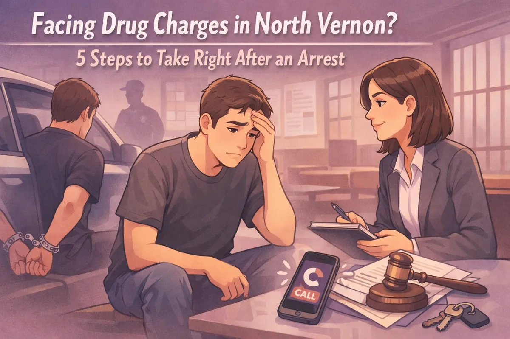

Facing Drug Charges in North Vernon? 5 Steps to Take Right After an Arrest

Getting arrested for drug charges is terrifying. Your mind races. You're worried about your job, your family, your future. Maybe you're reading this from outside the Jennings County Jail, or maybe a loved one just called you from there.
Here's the thing: what you do in the next 24 to 48 hours matters. A lot.
I've walked dozens of people through this exact situation here in North Vernon, Scipio, Hayden, and throughout Jennings County. Whether you're facing a misdemeanor possession charge or something more serious, these five steps can protect your rights and give you the best shot at a good outcome.
Let's walk through them together.
Step 1: Stay Silent and Exercise Your Rights
The officers might seem friendly. They might say things like, "Just tell us what happened and we can help you out." They might imply that cooperating now will make things easier later.
Don't fall for it.
You have the right to remain silent, and you should use it. Anything you say, and I mean anything, can be twisted and used against you in court. Even innocent explanations can hurt your case later.
Here's what you should say:
"I want to speak to a lawyer."
"I'm exercising my right to remain silent."
That's it. Then stop talking. Don't explain yourself. Don't try to justify what happened. Don't answer "just one more question."
Once you ask for a lawyer, the questioning should stop. If it doesn't, keep repeating that you want a lawyer and refuse to answer questions.
Step 2: Don't Consent to Searches
This step might be too late if you're already under arrest, but it's worth mentioning for anyone reading this who hasn't been arrested yet, or for family members who want to know what to tell their loved ones.
If police ask to search your car, your home, or your belongings, you can say no.
"I do not consent to any searches."
Say it clearly. Say it politely. But say it.
Police need probable cause or a warrant to search your property in most situations. If they have neither, they'll often ask for your consent instead. Don't give it to them. Even if you think you have nothing to hide, consenting to a search can never help you: it can only hurt you.
If they search anyway, that's their decision. Your lawyer can challenge that search later if it was illegal. But if you consent, you've given up one of your most important protections.
Step 3: Contact Family and Work on Securing Bond
Once you're booked into the Jennings County Jail, you'll typically have the chance to make a phone call. Use it wisely.
Call someone who can help you post bond and get you out. This might be a family member, a close friend, or a bail bondsman. Getting out of jail quickly isn't just about comfort: it's about being able to help with your defense.
Typically, within 48 hours if you are in jail, you'll appear before a judge for an initial hearing. The judge will tell you what charges you're facing and set a bond amount.
If you're stuck in jail and can't afford bond, don't panic. A criminal defense attorney can sometimes argue for a lower bond or get you released on your own recognizance, depending on your criminal history and the severity of the charges.
But here's the key: the sooner you get legal help, the better your chances of getting out and preparing a strong defense.
Step 4: Write Down Everything While It's Fresh
As soon as you can, write down everything you remember about your arrest. And I mean everything.
What time were you stopped or approached?
What reason did the officer give for the stop?
What questions did they ask you?
Did they read you your Miranda rights? When?
Were there any witnesses present?
Did you consent to any searches? What did you say exactly?
Were there any cameras present (body cams, dash cams, security cameras)?
Your memory will fade. Details will blur together. But these details can make or break your case.
For example, if the officer didn't have a valid reason to pull you over in the first place, any evidence they found might be thrown out. If they searched your car without your consent and without probable cause, that evidence might be suppressed. If they questioned you after you asked for a lawyer, those statements might be inadmissible.
But your attorney can only fight for you if they know what happened. Write it down now while it's fresh.
Step 5: Hire a Local Attorney Who Knows Jennings County
This is the most important step.
You need a lawyer. Not just any lawyer: a lawyer who knows the Jennings County court system, the local prosecutors, and how things work in North Vernon.
Public defenders are overworked and handle dozens of cases at once. They do their best, but they often don't have time to dig deep into your case or explore every possible defense.
A local attorney who focuses on criminal defense can:
Challenge the legality of the traffic stop or search
Negotiate with prosecutors for reduced charges or dismissal
Identify weaknesses in the state's case
Explore alternatives to traditional prosecution, like drug court
Make sure your rights are protected every step of the way
I've handled drug cases throughout Jennings County, from simple possession to more serious felony charges. I know the judges. I know the prosecutors. I know how to navigate the local system to get you the best possible outcome.
And here's the reality: drug charges in Indiana are serious. Misdemeanor possession charges carry up to a year in jail. Felony charges can mean years in prison and thousands in fines. This isn't something you want to handle on your own.
What About Jennings County Adult Recovery Court?
Here's something a lot of people don't know: if you're struggling with addiction, you might be eligible for the Jennings County Adult Recovery Court (ARC).
ARC is a program that focuses on treatment and rehabilitation instead of punishment. Instead of going to prison, you work with a team of professionals (including a judge, probation officers, and treatment providers) to address the underlying addiction issues.
The program typically includes:
Regular drug testing
Treatment and counseling sessions
Frequent court appearances to check your progress
Peer support groups
Job assistance and life skills training
It's not easy. Drug Court is demanding and requires real commitment. But if you complete the program successfully, you can often avoid jail time and sometimes even get your charges dismissed.
Not everyone qualifies for Drug Court, but if you're eligible, it can be a life-changing opportunity. A local attorney can help you determine if Drug Court is an option and guide you through the application process.
Don't Face This Alone
If you've been arrested on drug charges in North Vernon, Vernon, Commiskey, Hayden, Scipio, or anywhere in Jennings County, time is critical.
The decisions you make in the first few days after your arrest can shape the rest of your case. Don't leave your future to chance.
I've helped people in your exact situation navigate the criminal justice system and come out on the other side. Whether you're looking at your first charge or you've been through this before, I listen to what you have to say and give you options that make sense for your situation.
You don't have to figure this out alone. Let's sit down and talk about what happened, what you're facing, and what we can do to protect your rights and your future.
Call Chris Doran Law today for a consultation. Let's get to work on your defense.